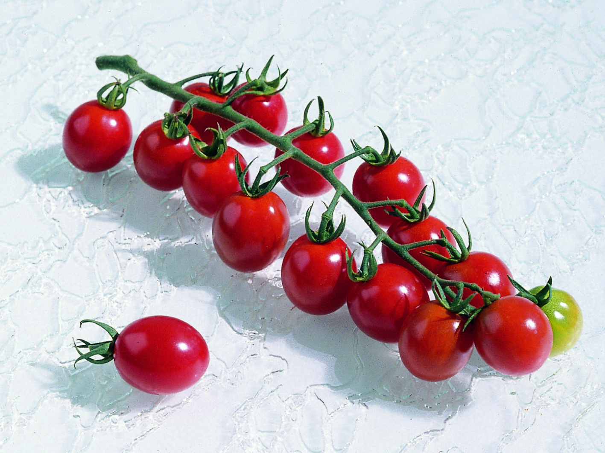
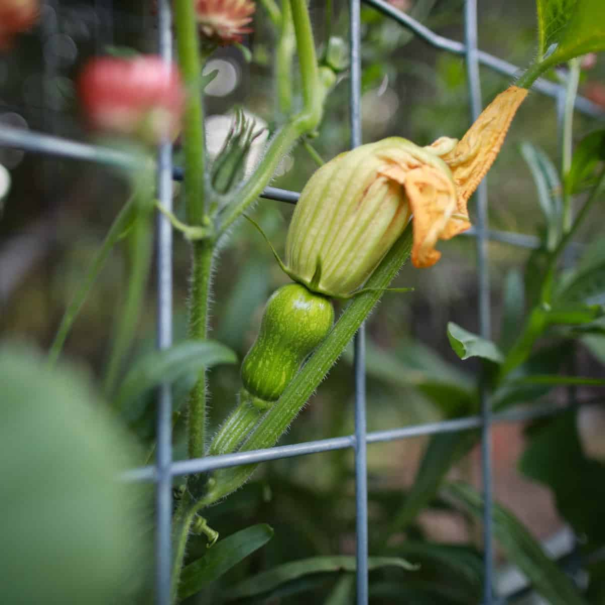

Cerisier (hors carré, côté ligne 4)
Délice d'Or (×6)
Poire Jaune (×2)
Blue Pitts (×1)
Charret (×1)
Courge Butternut (×2) — Carré potager
Courges (×11) — Ancien cerisier
Tomates (×32) — Ancien cerisier
📸 Les variétés en photo

🟡 Délice d'Or
Ronde jaune dorée × 6

🍐 Poire Jaune
Cerise en poire × 2

🔵 Blue Pitts
Anthocyanine bleu-violet

🔴 Charret
Cerise moyenne rouge

🎃 Butternut
Courge 2025 × 2
📐 Disposition :
CARRÉ POTAGER :
• Ligne 1 : 3 Délice d'Or, 1 Poire Jaune, 1 Blue Pitts
• Ligne 2 : 3 Délice d'Or, 1 Poire Jaune, 1 Charret
• Ligne 3 : libre (séparation tomates / courges)
• Ligne 4 : 2 Butternuts (2025) + libre en bas
• Cerisier — hors du carré, juste à côté de la ligne 4
CARRÉ ANCIEN CERISIER :
• Gauche : 1 ligne de 7 courges + 1 ligne de 4 courges (3 places libres)
• À 90° : 4 lignes de 8 tomates (32 pieds)
← Retour aux fiches variétés
CARRÉ POTAGER :
• Ligne 1 : 3 Délice d'Or, 1 Poire Jaune, 1 Blue Pitts
• Ligne 2 : 3 Délice d'Or, 1 Poire Jaune, 1 Charret
• Ligne 3 : libre (séparation tomates / courges)
• Ligne 4 : 2 Butternuts (2025) + libre en bas
• Cerisier — hors du carré, juste à côté de la ligne 4
CARRÉ ANCIEN CERISIER :
• Gauche : 1 ligne de 7 courges + 1 ligne de 4 courges (3 places libres)
• À 90° : 4 lignes de 8 tomates (32 pieds)